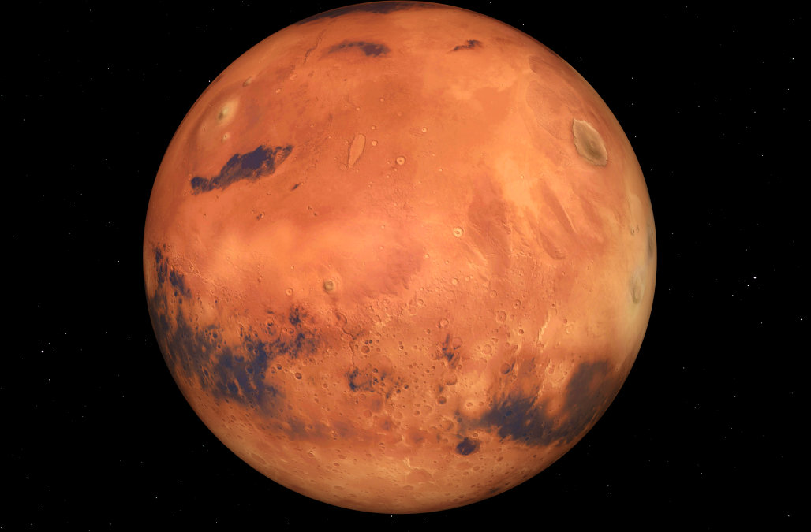
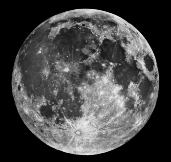
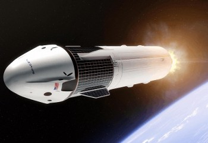
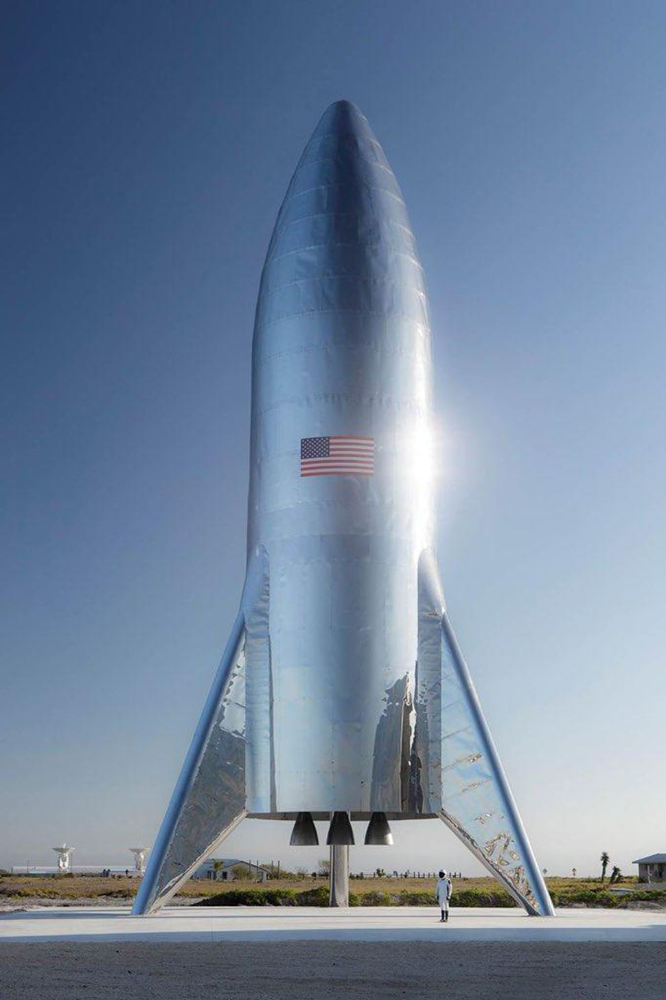
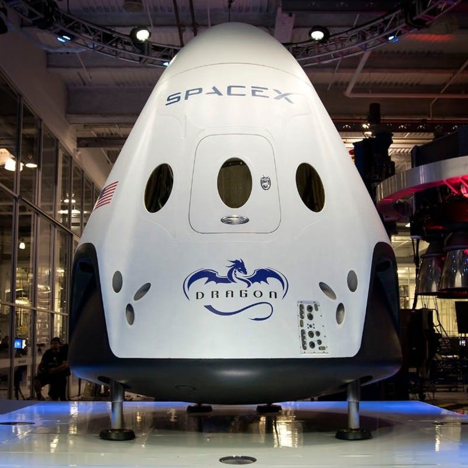

Information Page
Our Destinations

Mars
Mars is a planet of which the entire humanity is curious and most of them
wants to visit it. Our mission also has the journey to the enormous planet
mars, that will be a great event. The mars, second smallest planet in the
solar system, has little heat transfer across its surface, poor insulation
against the bombardment of the solar wind and insufficient atmospheric
pressure to retain water in a liquid form. The life scope on Mars has kept
everyone in doubt from decades. The journey to Mars from our spacecraft
could be helpful to resolve some questions regarding the atmosphere and
phenomenon over there.

Moon
Traveling to the moon is challenging along with a sense of a feeling of great
enthusiasm and eagerness. Our mission to the moon has been very
exciting although it takes some days to reach the moon, but we promise to
give you all the way a very great experience. Although, humans had
already visited on the moon, yet our aim is to fulfill your desires to step up
at the dreamful planet ever. This will pave the way for more information,
ideas and scientific facts regarding the moon. You will be able to share to
experience with others so the world can have more knowledge and have
more urge to know the space. No doubt, the journey would not be as easy
but it will be adventurous though. According to our mission, the entire flight
would take about a week, with passengers lifting off aboard the crewed
ship, cruising to the moon, performing a single flyby around the moon and
then returning to Earth.
Our Spaceships

Eagle
Eagle is the second spacecraft which was designed from the ground for attaining maximum reliability.
Eagle has simple two-stage configuration which reduces the number of separation events .
It is fulfilled with nine first-stage engines, it can safely complete its mission even in the event of an engine shutdown.
Eagle has features relative to the other spacecrafts. Eagle along with the Dragon spacecraft, was designed from the outset to deliver humans into
space and under an agreement with Spacex.

Phoenix
It is the foremost and the most powerful rocket of our company.With the ability to lift into orbit nearly 64 metric
tons which is greater than a 737 jetliner loaded with passengers, crew, luggage and fue. Phoenix can lift more than twice the payload
of the next closest operational vehicle.
Eagle missions will deliver large payloads to orbit inside a composite fairing, but the rocket can also carry the Dragon spacecraft.
Hence,our spacecrafts restores the possibility of flying missions with crew to the Moon or Mars.

Dragon
Dragon is our first spacecraft that is designed in order to bring people to the planets.The total launch payload mass
it can carry is 12000 lbs and total launchpad volume is 23 metric cube.The spacecraft has a certain section called pressurized section
which has the capability to carry humans.alongwith that ,it has special feature to carry cargo too.Its struture meets all the criteria of
carrying crew and the loads .